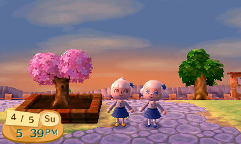

Welcome to Pawpoint City
A Look into my New Leaf Town
Introduction
The early days (Mayor Shorty on the left)
Residents
Now, good Mayors should never pick favorites, but it can't be said that Mayor Shorty is impartial.
Catchphrase: "nya"
Birthday: January 6th
Bob is an interesting resident because there are actually two Bobs living in Pawpoint. One of them is very into Cinnamoroll.
Catchphrases: "my dude", "cinnaminna"
Birthday: January 1st
Gallery:
If two clone villagers are in the same area, the game cannot recognize which one you are talking to. Thus, the legitimate Bob freezes when the clone is spoken to, and the clone will wander off.
Having a clone has only caused my game to break one time. It was during the Halloween event, I approached a costumed villager, and it turned out to be Bob 2. I didn't have any candy (me even being in Halloween at the time was a result of time travel shenanigans), and so I had to turn him down. This prompted a second string of upset dialogue from him, at which point the game threw me across the map. Suddenly, I'm standing in front of Bob 1, and every time I pressed "A", the conversation would end, zoom out a tiny bit, and then another text box would appear from him. I had to turn my 3DS off in order to exit the conversation. No damage was done to my game.
Gallery
Celebration of the first addition to Pawpoint's park.
 Mayors Shorty (left) and Bon (right) by the Town Tree.
Mayors Shorty and Bon do not condone drug usage.
The Zen Garden at night.
La Casa de Bob.
Town Hall area at night.
Growth of the Town Tree.
Hello Kitty/My Melody bedroom.
 Dance break!
Dance break! Welcome to Café Cinnamon!
Shorty and Felyne sing a duet.
There's always a smile in Pawpoint!